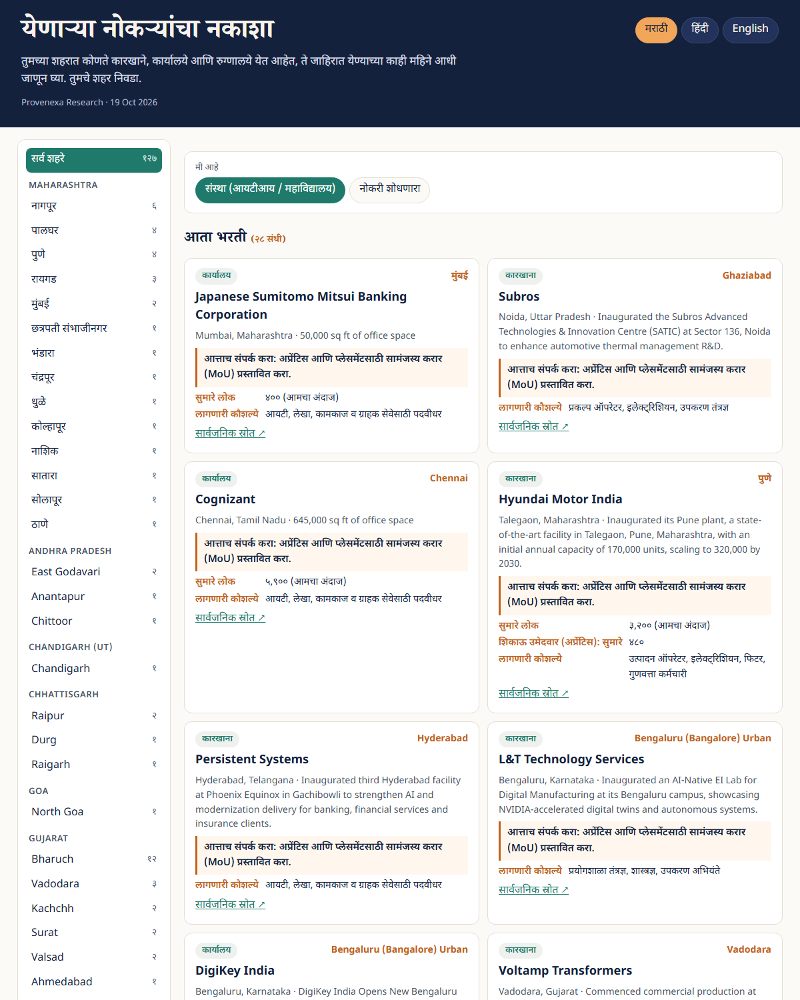
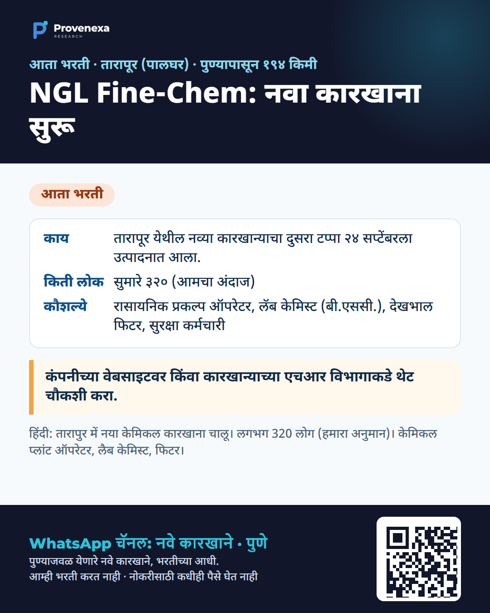
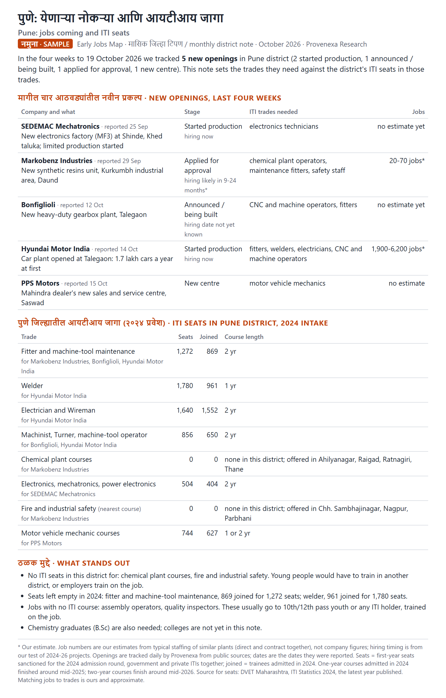

The live map
Updated every morning, in Marathi, Hindi and English. Filter by city, and switch between "institute" and "job seeker" views.
Open the live map
2
A Marathi WhatsApp alert
A real alert posted on 14 Oct 2026 to our Pune channel: a new plant at Tarapur, what it is, roughly how many people (our estimate), the skills it needs, and where to ask. We never recruit and never take money for jobs.

The monthly district note
One page per district: new openings in the month and the trades they need, set against ITI seats in those trades.
Open the Pune sample (PDF, October 2026)